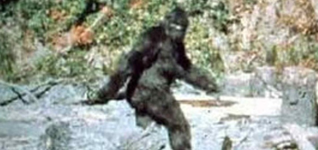
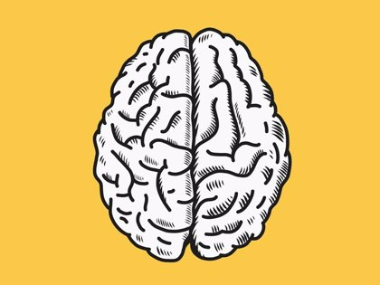

Esta es la conclusión de un nuevo meta-análisis de la Escuela de Salud Pública y el Hospital
Brigham y de Mujeres de
Harvard en Boston (EEUU) que ha sido publicada en la revista Molecular Psychiatry. Según el
trabajo, existen razones
genéticas por las que la cafeína tiene efectos diferentes en cada persona, marcando así el gusto
por el uso cotidiano
de la bebida más consumida en todo el planeta. “Esta investigación sirve como un ejemplo de cómo
la genética puede
influir en algunos tipos de comportamiento habitual”, afirma Daniel Chasman, líder del estudio.
Escrito por: Juan Carlos
¿Quién es pie grande o el hombre de las nieves 👣❄?

Una sombra en las montañas, una visión entre los árboles, un monstruoso hombre que vive alejado
de todos y que miles han buscado sin encontrar nada, excepto algunas huellas en la tierra y una
muy dudosa fotografía. ¿Sabes de quién se trata?
En algunos lugares se le conoce como «Pie grande», en otros le dicen «Abominable hombre de las
nieves» e incluso hay quienes simplemente le dicen «Sasquatch» o «Yeti». ¿Tú ya lo conocías?
Se dice que Pie grande es una criatura que se conoce desde hace muchos siglos en Norteamérica,
sobre todo en los bosques de Estados Unidos y Canadá, aunque en algunas partes de Asia también
dicen haberlo visto, ahí es donde se le conoce como Yeti.
Incluso desde antes de que tuviera un nombre, ya se conocía la leyenda de una criatura, que
podría ser un gran hombre o una mezcla entre hombre y simio de casi tres metros de altura,
cubierta de pelo rojizo o café, y que vivía alejada de la gente. En las montañas nevadas también
se dice que tiene un pelaje blanco que le permite esconderse a simple vista.
Aunque algunos hablan de un monstruo muy peligroso, la leyenda dice que es una criatura tímida,
que simplemente quiere vivir en paz alejado de todos.
Pie grande es parte de los críptidos del mundo. Los críptidos –del griego criptós, 'oculto'– son
seres que muchos dicen haber visto, pero nadie ha podido demostrar que existen.
Escrito por: Alan Tamez
Benito Martínez (Bad Bunny) se sienta en la mesa de Michael Jackson y Freddie Mercury
Después de sus recientes nominaciones a los Grammys podemos decir que Benito se sienta en la mesa de
los mejores artistas de la historia, es el exponente de la música de nuestra generación aunque los viejos y gente
anticuada no lo quiera ver.
Escrito por: Paulo Antoria
Agua en la Luna
La Administración Nacional de Aeronáutica y el Espacio (NASA, por sus siglas en inglés)
confirmó este lunes que detectaron presencia del líquido en varios cráteres del satélite natural de la Tierra.
"Aún no sabemos si podemos usarlo como recurso, pero conocer sobre el agua en la Luna es clave para nuestros planes de exploración Artemisa",
dijo Jim Bridenstine, el jefe de la NASA.
Escrito por: Jose Manuel
El cerebro no descansa

A lo que solemos pensar,
el cerebro permanece activo incluso cuando se encuentra aparentemente descansando.
La actividad del órgano cerebral en reposo, es decir, sin la presencia de algún estímulo o tarea,
está estructurada y responde a unos determinados patrones o redes espaciotemporales: las llamadas
redes en estado de reposo o resting-state networks (RSN).
Neurocientíficos de la Universidad Pompeu Fabra (UPF) acaban de descifrar las claves de su funcionamiento.
Tal y como exponen en la revista Trends in Neurosciences, y basándose en modelos informáticos de gran escala del cerebro,
han comprobado que cuando las redes en estado de reposo se encuentran en una situación descrita por los expertos como 'límite de la inestabilidad',
su eficacia aumenta, a la vez que incrementa su velocidad para movilizarse ya sea para la percepción sensorial o para la acción cerebral.
Dicho de otro modo, cuando el cerebro se encuentra en el punto crítico de la 'inestabilidad' en una situación de reposo,
puede desplegar todo su potencial de respuesta ante un estímulo o una tarea concreta.